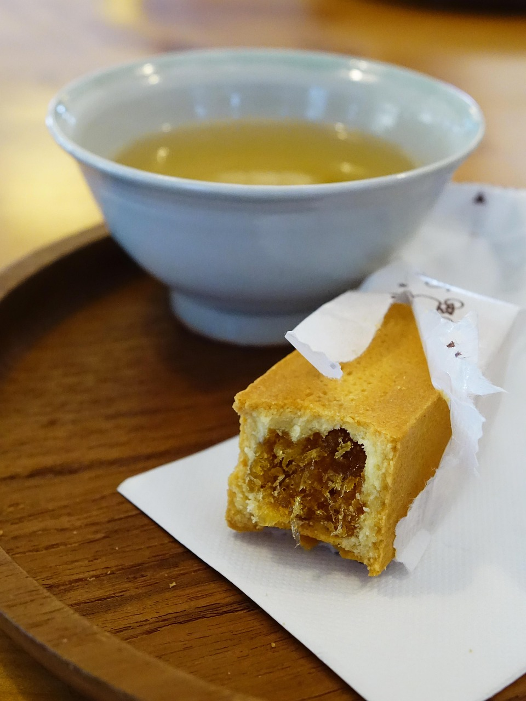

대만 여행 선물 추천 — 뻔한 간식 말고 뭘 사올까?
회사 선물부터 재방문객을 위한 신상 간식까지 — 여행자들이 실제로 사 온 대만 선물과 브랜드별 비교, 가성비 팁을 한 번에 정리했습니다.
게시 · 수정
대만 여행 선물 하면 펑리수, 누가크래커, 에그롤, 우롱차가 먼저 떠오릅니다. 다 좋은 선택이지만, 여러 번 다녀온 여행자라면 슬슬 새로운 선물이 궁금해지기 마련이에요. 실제 여행자들이 사 온 선물 후기를 바탕으로, 무난한 '국룰' 선물부터 브랜드별 비교, 예산에 맞게 고르는 팁까지 정리해봤어요.
01 · 실패 없는 '국룰' 선물 리스트
펑리수(鳳梨酥) 대만 선물의 대명사입니다. 브랜드마다 맛과 가격 차이가 있어서, 이름 있는 브랜드로 사면 실패할 일이 거의 없어요.
누가크래커(牛軋餅) 회사에 가볍게 돌릴 선물로 가장 무난하다는 평이 많습니다. 다만 브랜드에 따라 맛 차이가 꽤 커요.
에그롤(蛋捲) 바삭한 식감 덕분에 호불호가 적은 편입니다. 크림이 들어간 제품도 있어서 맛을 다양하게 골라볼 수 있어요.
우롱차 · 대만 홍차 차를 즐기는 분에게 특히 좋습니다. 부피가 작아 캐리어에 넣기도 편해요.
금문 고량주 간식은 아니지만 받는 사람마다 크게 반가워한다는 후기가 많습니다. 도수가 높은 편이라 술을 즐기는 분께 추천할 만해요.

02 · 재방문객이라면, 이런 것도 찾아보세요
펑리수·누가크래커는 이제 익숙하다면, 크림이 들어간 에그롤처럼 조금 다른 버전을 찾아보는 것도 방법입니다. 맛을 여러 가지로 시식해보고 고를 수 있는 매장도 있고, 포장이 깔끔해서 선물용으로도 무난하다는 후기가 많아요.
03 · 누가크래커, 브랜드마다 이렇게 다릅니다
| 전문 브랜드(세인트피터 등) | 까르푸 등 마트 | 스위덤 | |
|---|---|---|---|
| 가격대 | 다소 비싼 편 | 가장 저렴 | 중간 — 만원 안팎 |
| 맛 평가 | 꾸준히 좋은 평, 다만 가격이 계속 오르는 추세 | 브랜드에 따라 편차가 커서 호불호가 갈립니다 | 가격 대비 맛이 좋다는 후기가 많아요 |
| 추천 상황 | 정성껏 챙기고 싶은 선물일 때 | 가볍게 인사치레만 할 때 | 가성비 좋은 선물을 찾을 때 |
04 · 예산과 상황에 맞게 고르는 법
제대로 챙기고 싶은 선물이라면 전문 브랜드 매장에서 사는 게 안전합니다. 가격은 더 나가지만 맛과 포장 모두 검증된 편이에요.
가볍게 여러 개 돌릴 선물이라면 까르푸 같은 마트에서 사도 충분하다는 의견이 많습니다. 다만 마트 자체 누가크래커는 호불호가 갈린다는 후기가 있으니, 브랜드를 확인하고 고르는 게 좋아요.
최근 대만 물가가 많이 올랐다는 점도 참고하기 오랜만에 방문하는 여행자라면 예전 가격을 생각하고 갔다가 놀랄 수 있습니다. 예산을 조금 여유 있게 잡아두는 걸 추천해요.
"까르푸 누가는 하나 먹고 다 버렸어요, 선물로 주면 욕먹을지도... 스위덤은 가격도 착하고 맛있어요." — 여러 브랜드를 직접 먹어본 여행자가 남긴 비교입니다.
지도에서 마트·간식 스팟도 확인해보세요
선물 쇼핑하기 좋은 마트와 간식 매장을 지도에서 바로 찾아보세요.